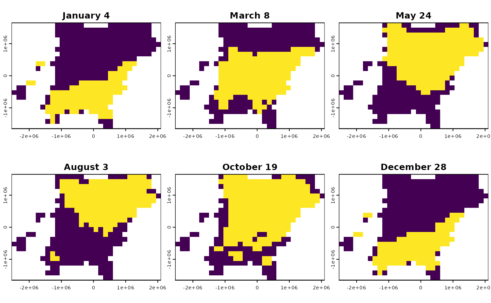

If a BirdFlow object has a dynamic mask it controls which subset of the
active cells in the model are active for a given timestep. This is derived
from eBird Status and Trends (S&T) distributions; cells that are zero in the
S&T data for each timestep are excluded from the model for that timestep,
and tracked with the dynamic mask. The dynamic mask has the same dimensions
as the distributions (see get_distr()) with either a vector of n_active()
for a single timestep or a matrix with n_active() rows if more than one
timestep. The values are logical with TRUE corresponding to the cells that
are part of the model (for the given timestep).
Arguments
- x
A BirdFlow object
- which
Indicates which timesteps to return. Can be one or more integers indicating timesteps; character dates in the format year-month-day e.g.
"2019-02-25";Dateobjects; or"all"which will return distributions for all timesteps.
Value
A vector or matrix with elements or rows corresponding to active cells in the model indicating whether a cell is included in the model for the given timestep.
Examples
library(terra) # For plotting of spatRaster
#> terra 1.8.70
bf <- BirdFlowModels::amewoo |> add_dynamic_mask()
dm <- get_dynamic_mask(bf, c(1, 10, 21, 31, 42, 52))
r <- rasterize_distr(dm, bf)
plot(r, legend = FALSE, mar = c(1.3, 1.3, 1.3, .3) )
